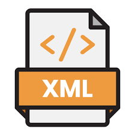
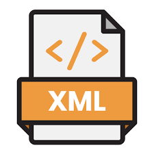

A propos de moi
Je suis actuellement élève en seconde année de BTS SIO (Services Informatiques aux Organisations) au lycée Nelson Mandela. En spécialité SLAM (Solutions Logicielles et Applications Métiers).
J'ai choisi l'option SLAM car je suis un passionné d'informatique, de programmation et de développement.Tout en réstant curieux à propos de nouveauté les consernants.
Intéressé par la conception de logiciels et sites internets, j'aimerai me spécialiser et augmenter mes connaissances dans ces différents domaines.
Ce portfolio a été mis en place pour vous présenter un aperçu de mes compétences acquises au fil de mon parcours au travers de mes différentes activités.

BTS SIO
Presentation BTS SIO
Le BTS Services informatique aux Organisations (SIO) est un diplôme reconnu par l’état de niveau Bac+2. Il remplace depuis septembre 2011 l’ancien BTS informatique de Gestion (BTS IG). Le programme a évolué en fonction de la place et du rôle des TIC (Technologies d’Information Communication) et propose deux spécialités bien distinctes : le BTS SIO SISR et le BTS SIO SLAM.
Les Options du BTS SIO
SLAM
La spécialisation SLAM du BTS SIO est elle plus orientée Développement. Elle permet d'apprendre à réaliser des logiciels, sites webs, applications mobiles, mais aussi de rédiger des documentations techniques liées à celles-ci. De plus, elle permet d'apprendre à former des utilisateurs pour gérer la maintenance des applications.
SISR
La spécialisation SISR du BTS SIO permet d’apprendre un métier qui consiste à installer, configurer et gérer les équipements et les réseaux informatiques. Cela signifie intervenir sur la conception, la mise en place, le déploiement et la maintenance de programmes destinés à la gestion au sein d’une organisation.
VEILLE TECHNOLOGIQUE & JURIDIQUE
QU'EST-CE QUE LA VEILLE TECHNOLOGIQUE ?
La veille technologique consiste à s'informer en continu sur les nouveautés du secteur informatique, les inventions des concurrents ainsi que les nouvelles technologies et ce dans le but d'être le meilleur dans son domaine.
Le thème de veille technologique que j'ai décidé d'aborder s'intitule l'intelligence artificielle, car en tant que développeur informatique , je risque d'être confrontée à divers problèmes liés à l'intelligence artificielle .
QU'EST-CE QUE LA VEILLE JURIDIQUE ?
Une Veille Juridique, qui elle, sert à rester informé sur les lois ainsi que toutes les informations dans le domaine juridique de l'informatique
Faire une veille est très important car il faut être à l'affût des dernières nouveautées, et l'informatique étant un domaine qui évolue sans cesse.
Competence


 
